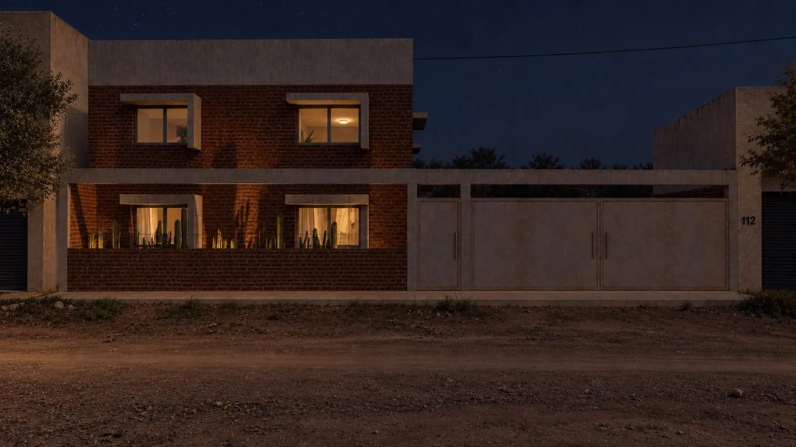

- Tipo
- Arquitectura residencial
- Ubicación
- San Juan del Río, Querétaro
- Año
- 2026
- Superficie
- 4 × 58 m²
- Estado
- Propuesta conceptual
- Proceso
-
- Idea
- Transformación
- Materia
Idea
Departamentos San Juan del Río nace de la búsqueda de una alternativa habitacional contemporánea, accesible y funcional, dirigida a personas solteras o parejas sin hijos. Concebido como un conjunto de viviendas para renta, el proyecto explora las posibilidades del espacio monoambiental y cuestiona la necesidad de recurrir a divisiones convencionales para definir las distintas formas de habitar.
La propuesta parte de una idea central: transformar el mobiliario en arquitectura.
Un elemento multifuncional se convierte en el eje organizador de cada departamento, integrando las funciones de sofá, comedor y clóset en una misma pieza. Más que un objeto, este mueble actúa como articulador espacial, delimitando las áreas sociales y privadas sin necesidad de levantar muros que fragmenten la vivienda.
Esta estrategia permite que la superficie reducida se perciba más amplia, favoreciendo la continuidad visual y una relación fluida entre las distintas actividades cotidianas.
La materialidad responde a una búsqueda de honestidad constructiva. Los acabados rústicos y los materiales expuestos construyen una identidad de carácter industrial, donde la sencillez se convierte en una expresión arquitectónica deliberada.
El resultado es una propuesta que busca equilibrar economía, funcionalidad y calidez, demostrando que la calidad del espacio no depende únicamente de sus dimensiones, sino de la inteligencia con la que se organiza.



Proceso
El principal desafío consistió en optimizar los costos de construcción y acabados sin comprometer la experiencia habitacional.
La respuesta fue reducir las divisiones interiores y concentrar distintas funciones en un único elemento de mobiliario. Esta decisión permitió replantear la distribución tradicional de una vivienda compacta, haciendo que una misma pieza resolviera simultáneamente necesidades de almacenamiento, descanso, convivencia y organización espacial.
La elección de materiales aparentes y acabados de carácter rústico respondió tanto a criterios económicos como a una intención estética: permitir que los materiales se expresen desde su propia naturaleza, evitando revestimientos innecesarios.
Así, la economía de recursos deja de entenderse únicamente como una restricción y se convierte en una herramienta de diseño.
Ficha técnica
- Tipo
- Arquitectura residencial / Vivienda multifamiliar
- Estado
- Propuesta conceptual.
- Superficie
- 4 departamentos de aproximadamente 58 m² cada uno.
- Materiales
- Concreto aparente, ladrillo aparente, madera y herrería.
- Imágenes
- Visualizaciones arquitectónicas digitales.
- Créditos
- ARQUEMIST.

«Cuando el espacio es limitado, la arquitectura debe multiplicar sus posibilidades».